第10讲 · 一元函数积分学的应用（一）——几何应用
据《张宇考研数学基础30讲·高等数学分册（2026版）》整理 · 覆盖原书 P310–P328
本讲导读
这一讲就干一件事：把几何量写成定积分，然后算对。张宇在开头写的总目标是"套公式、做计算"——难的不是想法，是计算量，例10.4 一个面积要算无穷段之和，例10.7 的面积本身就是反常积分。主线是：平面图形面积 → 旋转体体积 → 函数平均值（公共部分），数一数二再多考形心、弧长、侧面积。学习建议：每组公式都照着书上的微元法亲手推一遍，公式才不会张冠李戴；做题先画图定限，遇到 \(\sqrt{\sin x}\) 这类先定定义域再套公式。
站注·真题大数据：本讲（积分几何应用）在真题里属第一梯队考点，旋转体体积是"每年常客"，弧长与侧面积则基本是数一专属的稳定考点；原书本讲的"仅数一、数二"标注与此一致——数二同学要管到弧长，数三同学主线就是面积、体积、平均值三件套。
知识框架
- 用定积分算几何量：总方法论
- 微元法两步走
- 第一步取微元：竖条、水平条、小扇形、小圆盘、圆柱壳，切什么由图形和旋转轴决定
- 第二步积分：积分限由定义域和交点决定，先画图再定限
- 三大坐标系
- 直角坐标：直接套公式
- 参数方程：不引进新公式，一律作换元（例10.2）
- 极坐标：直接套公式，注意平方差（例10.3）
- 反常积分推广：区域无界时用收敛的反常积分表示（例10.4、例10.7、习题10.1）
- 平面图形的面积
- 直角坐标：\(S=\int_a^b|y_1(x)-y_2(x)|\,\mathrm{d}x\)
- 极坐标曲边扇形：\(S=\frac12\int_\alpha^\beta|r_1^2(\theta)-r_2^2(\theta)|\,\mathrm{d}\theta\)
- 参数方程：\(S=\int_\alpha^\beta y(t)x'(t)\,\mathrm{d}t\)（换元形式）
- 常见综合考法
- 面积 + 数列极限（例10.1：裂项 + 第二重要极限）
- 无穷区间分段取绝对值（例10.4：等比数列求和）
- 旋转体的体积
- 圆盘法（绕 x 轴）：\(V_x=\int_a^b\pi y^2(x)\,\mathrm{d}x\)
- 柱壳法（绕 y 轴）：\(V_y=2\pi\int_a^b x|y(x)|\,\mathrm{d}x\)（要求 \(0\le a<b\)）
- 绕一般定直线 \(L_0\)：公式 (10-1)
- 退化：\(A=C=0\) 时就是圆盘法
- 平移轴（\(x=1\)、\(y=3\) 型）：大体积减小体积
- 反函数转化：\(x,y\) 地位交换，绕 x 轴也能用柱壳（例10.6）
- 函数的平均值：\(\bar y=\frac{1}{b-a}\int_a^b y(x)\,\mathrm{d}x\)
- 与积分中值定理的联系：\(\bar y=y(\xi)\)
- 高频综合：变限积分求导（例10.8）
- 其他几何应用（仅数一、数二）
- 形心坐标公式：\(\bar x\)、\(\bar y\) 分子分母结构（例10.9）
- 平面曲线的弧长：直角 / 参数 / 极坐标三套公式（例10.10、例10.11、习题10.3、10.4）
- 旋转曲面的面积（侧面积）：三种方程各一套（例10.12、例10.13）
- 平行截面面积为已知的立体体积：\(V=\int_a^bA(x)\,\mathrm{d}x\)
- 旋转体体积是它取 \(A(x)=\pi f^2(x)\) 的特例
- 绕 \(y=x\) 旋转就靠它做（例10.14）
核心概念与定理
一、平面图形的面积（直角坐标）
曲线 \(y=y_1(x)\)、\(y=y_2(x)\) 与 \(x=a\)、\(x=b\ (a<b)\) 围成的面积就是"上减下"的绝对值积分：\(S=\int_a^b|y_1(x)-y_2(x)|\,\mathrm{d}x\)。微元法两步：先取竖条 \(\Delta S=|y_1(x)-y_2(x)|\,\mathrm{d}x\)，再从 \(a\) 到 \(b\) 积分。绝对值不是装饰——图形翻到 x 轴下方时靠它保持非负（例10.4 的批注原话："保持非负（对应图形在 x 轴下方的部分向上翻折）"，印P314）。区域无界时（向无穷延伸）照样写积分，按收敛的反常积分处理，这是本讲面积公式的一个推广方向（印P311）。
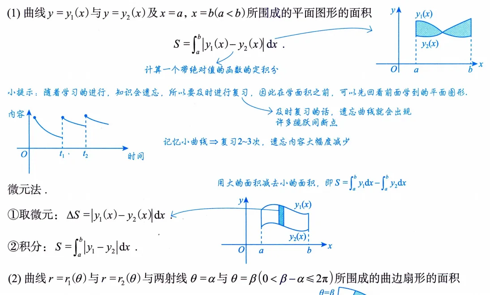
二、平面图形的面积（极坐标曲边扇形）
极坐标下曲线 \(r=r_1(\theta)\)、\(r=r_2(\theta)\) 与射线 \(\theta=\alpha\)、\(\theta=\beta\ (\alpha<\beta)\) 围成的曲边扇形：
\[ S=\frac12\int_\alpha^\beta\left|r_1^2(\theta)-r_2^2(\theta)\right|\,\mathrm{d}\theta . \]
微元怎么来的：\(\mathrm{d}\theta\to0\) 时把小扇形当三角形看，\(\Delta S=\frac12|r_2^2(\theta)-r_1^2(\theta)|\,\mathrm{d}\theta\) 是"大三角形减小三角形"。做题第一步永远是先由 \(r\ge0\)（如 \(r^2=a^2\cos2\theta\) 要求 \(\cos2\theta\ge0\)）确定 \(\theta\) 的合法范围，再谈对称性（例10.3 只积到 \(\pi/4\) 的原因）。圆弧、玫瑰线、双纽线、心形线这类"从原点出发好描述"的图形，极坐标比直角坐标省事得多。
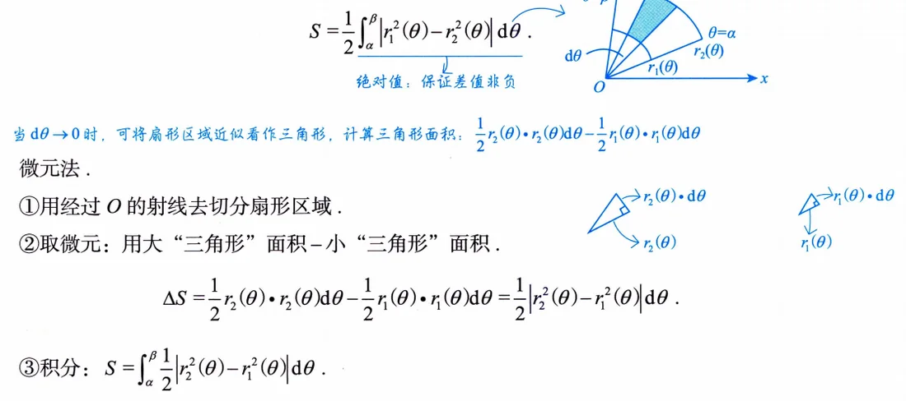
三、参数方程下的面积：换元，不是新公式
\(x=x(t),\,y=y(t)\ (\alpha\le t\le\beta)\) 不需要新公式——它就是直角坐标面积公式作了换元 \(x=x(t)\)：
\[ S=\int_\alpha^\beta y(t)x'(t)\,\mathrm{d}t . \]
原书在例10.2 后的注里把这句话点透了：参数方程下面积公式的本质，就是直角坐标系下面积公式的换元法形式（印P313）。想通这条，参数方程下的体积、弧长、侧面积全是同一回事——积分限从 x 的范围换成 t 的范围，被积函数里多乘一个 \(x'(t)\) 或换成弧微分。摆线 \(x=a(t-\sin t),\,y=a(1-\cos t)\) 一拱对应 \(t:0\to2\pi\)，是这类题的标配图形，考试不会给图，得自己会画（印P312 原书提醒）。
四、圆盘法（绕 x 轴的旋转体体积）
垂直于 x 轴把旋转体切成一片片"小硬币"，每片半径 \(|y(x)|\)、厚 \(\mathrm{d}x\)：
\[ V_x=\int_a^b\pi y^2(x)\,\mathrm{d}x . \]
适用条件几乎不设限：曲线连续即可（对比柱壳法多出的 \(0\le a<b\)）。图形在 x 轴下方也没关系，平方自动消化符号。遇到"两条曲线围成的区域绕 x 轴"，就变成大圆盘减小圆盘的垫圈：\(V=\pi\int_a^b[y_\text{上}^2-y_\text{下}^2]\,\mathrm{d}x\)（自测题5 就是这个形状）。
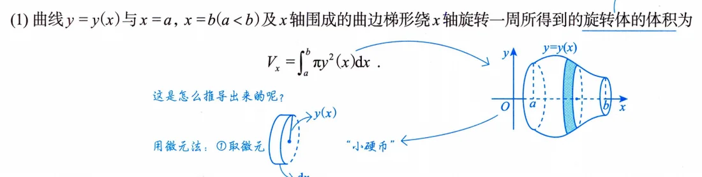
五、柱壳法（绕 y 轴的旋转体体积）
竖条绕 y 轴转出一层"圆柱壳"，切开挖平是长 \(2\pi x\)、高 \(|y(x)|\)、厚 \(\mathrm{d}x\) 的长方体：
\[ V_y=2\pi\int_a^b x|y(x)|\,\mathrm{d}x\qquad(0\le a<b). \]
注意条件比圆盘法多一个 \(0\le a<b\)：壳的半径 \(x\) 必须非负（印P315）。原书的记忆版把两条放一起：\(V_x=\int_a^b\pi\,\square^2\,\mathrm{d}x\)，\(V_y=2\pi\int_a^b x|\square|\,\mathrm{d}x\)，往方框里代曲线就行。什么时候选柱壳：区域是"竖条型"（上下两条曲线夹住）而旋转轴是竖直的，或者反过来"水平条型"配水平轴——条的方向与轴平行时才转得出壳。
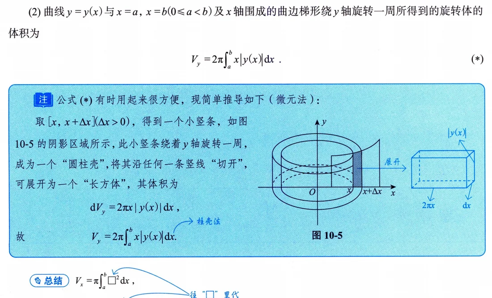
公式10-1 绕一般定直线旋转
更一般的：设 \(y=f(x)\ (a\le x\le b)\) 可导，\(L_0:Ax+By+C=0\) 是一条定直线，且过 \(L_0\) 的任一条垂线与曲线至多一个交点（保证旋转体"一层一层"清晰可切），则曲线绕 \(L_0\) 旋转所得旋转体体积为
\[ V=\frac{\pi}{(A^2+B^2)^{3/2}}\int_a^b\left[Ax+Bf(x)+C\right]^2\left|Af'(x)-B\right|\mathrm{d}x. \tag{10-1} \]
取 \(A=C=0\)（\(L_0\) 为 x 轴）立刻退化回 \(V=\pi\int_a^bf^2(x)\,\mathrm{d}x\)，所以它是圆盘法的推广。考试里更常用的不是硬背它，而是它的思想：轴平移了，半径就换成"点到直线的距离"；立体有里有外，就"大体积减小体积"（例10.7 绕 \(x=1\)、习题10.9 绕 \(y=3\) 都是这么处理的）。
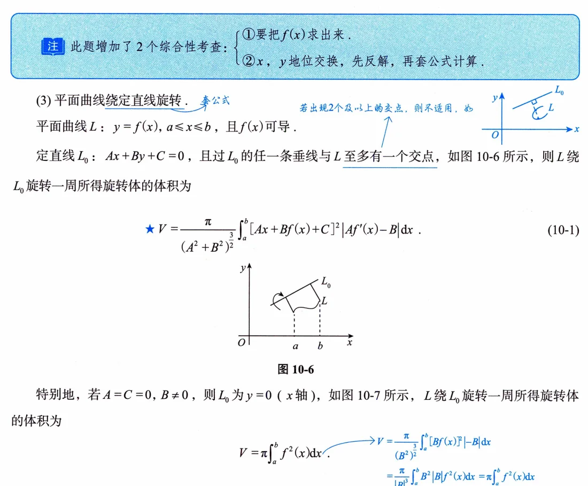
六、函数的平均值
\[ \bar y=\frac{1}{b-a}\int_a^b y(x)\,\mathrm{d}x, \]
默认 \(y(x)\) 连续，且由积分中值定理有 \(\bar y=y(\xi),\ \xi\in[a,b]\)（印P318）。公式本身一行写完，但考题几乎从不让你直接套——第二层都埋在变限积分里：看到 \(f(x+T)-f(x)\) 就设 \(F(x)=\int_x^{x+T}f(t)\,\mathrm{d}t\) 求导（例10.8），或反过来给平均值反求函数（习题10.5）。
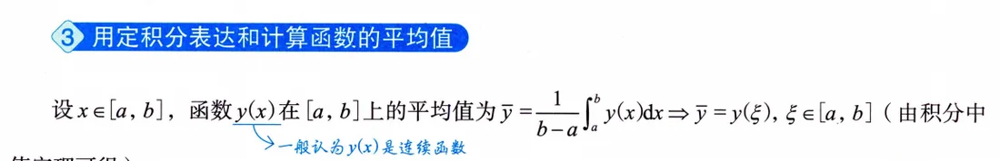
七、形心坐标公式（仅数一、数二）
曲边梯形 \(D=\{(x,y)\,|\,0\le y\le f(x),\,a\le x\le b\}\)（\(f\) 连续）的形心：
\[ \bar x=\frac{\int_a^b xf(x)\,\mathrm{d}x}{\int_a^b f(x)\,\mathrm{d}x}, \qquad \bar y=\frac{\dfrac12\int_a^b f^2(x)\,\mathrm{d}x}{\int_a^b f(x)\,\mathrm{d}x}. \]
分子就是"对坐标的矩"：\(\bar x\) 的分子是 \(x\cdot f(x)\)，\(\bar y\) 的分子多一个 \(\frac12\)（来自竖条自己的形心在半高处 \(\frac{y}{2}\)），这个 \(\frac12\) 是最常丢的。例10.9 拿 \(y=\frac14x^2-\frac12\ln x\) 练手，分子分母都要用分部积分处理 \(\ln x\)。
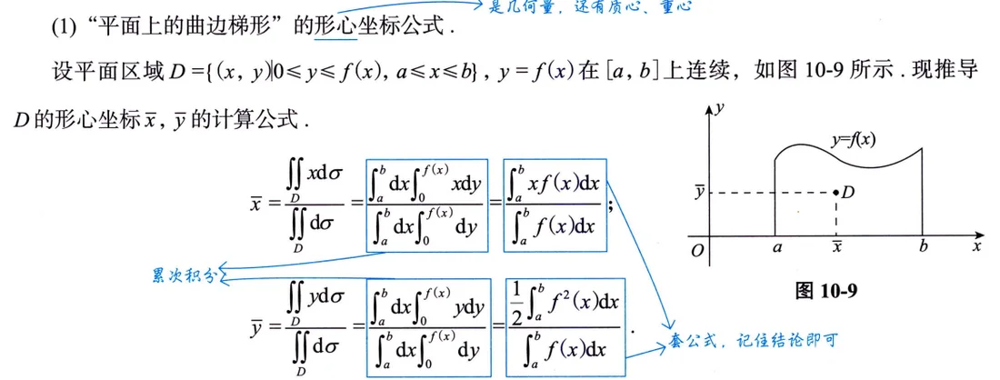
八、平面曲线的弧长（仅数一、数二）
三种方程三套公式，全是弧微分 \(ds=\sqrt{(\mathrm{d}x)^2+(\mathrm{d}y)^2}\) 的展开（要求 \(|y'(x)|<\infty\)、\(x'(t)\neq0\)、\(r,r'\) 连续，印P320）：
\[ s=\int_a^b\sqrt{1+[y'(x)]^2}\,\mathrm{d}x,\qquad s=\int_\alpha^\beta\sqrt{[x'(t)]^2+[y'(t)]^2}\,\mathrm{d}t,\qquad s=\int_\alpha^\beta\sqrt{[r(\theta)]^2+[r'(\theta)]^2}\,\mathrm{d}\theta. \]
原书的讲法很直白：本讲不推导，记住结论会用。直角坐标的题（例10.10）先看 \(1+y'^2\) 能不能配成完全平方；极坐标的题（例10.11）常配出 \(\int\sqrt{1+\theta^2}\,\mathrm{d}\theta\) 这类"丑"原函数，属正常现象。对称性是省力关键：星形线、心形线都只算四分之一或一半再翻倍（习题10.4）。
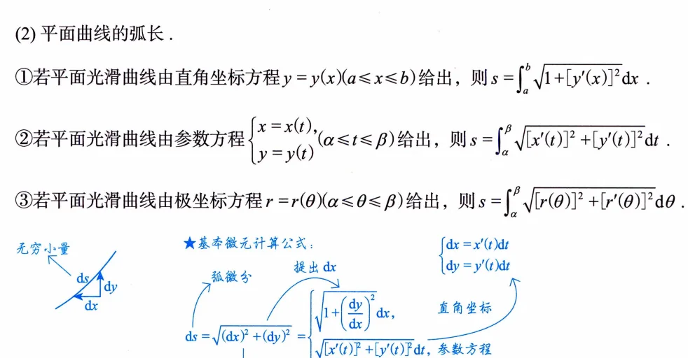
九、旋转曲面的面积（侧面积，仅数一、数二）
在弧长微元 \(ds\) 上乘"圆周长" \(2\pi|y|\)（绕 x 轴），三种方程：
\[ S=2\pi\int_a^b|y|\sqrt{1+(y_x')^2}\,\mathrm{d}x,\qquad S=2\pi\int_\alpha^\beta|y(t)|\sqrt{(x_t')^2+(y_t')^2}\,\mathrm{d}t, \] \[ S=2\pi\int_\alpha^\beta|r(\theta)\sin\theta|\,\sqrt{[r(\theta)]^2+[r'(\theta)]^2}\,\mathrm{d}\theta . \]
极坐标那套里的 \(|r\sin\theta|\) 就是曲线上点的"y 坐标"（到旋转轴的距离），别只记 \(r\sin\theta\) 把绝对值丢了。原书手写注提醒的一句话值背诵：算体积用 \(\mathrm{d}x\)，算侧面积用 \(\mathrm{d}s\)（印P321）——体积是"切片累加"，侧面积是"沿曲线累加"，两者微元根本不同，这也是为什么弧长公式和侧面积公式成对出现。
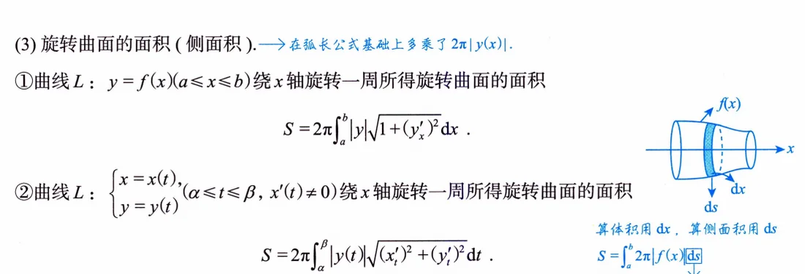
十、平行截面面积为已知的立体体积
立体夹在 \(x=a\) 与 \(x=b\) 之间，垂直于 x 轴的平面截立体所得截面面积为连续函数 \(A(x)\)，取微元 \(\mathrm{d}V=A(x)\,\mathrm{d}x\)，则
\[ V=\int_a^b A(x)\,\mathrm{d}x . \]
旋转体体积是它取 \(A(x)=\pi f^2(x)\) 的特例（印P322，考研至今未直接考过）。但它是处理"绕斜线旋转"的备用武器：例10.14 绕 \(y=x\) 旋转时，截面是圆，半径是曲线上点到 \(y=x\) 的距离 \(r=\frac{\sqrt x-x}{\sqrt2}\)，于是 \(A(x)=\sqrt2\,\pi\left(\frac{\sqrt x-x}{\sqrt2}\right)^2\)——平移截面法比死套公式 (10-1) 更要直觉，原书自己也说这方法"要有足够的经验，供参考"，基础阶段见过、能看懂即可。
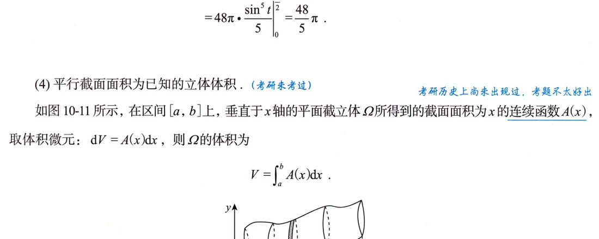
典型例题精讲
例10.1（面积 + 数列极限的填空题）
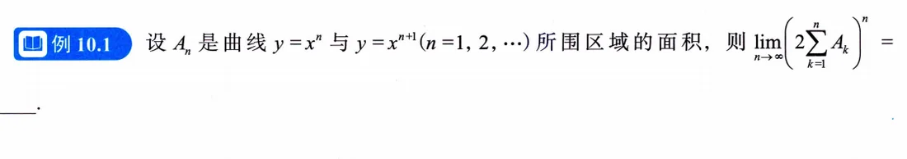
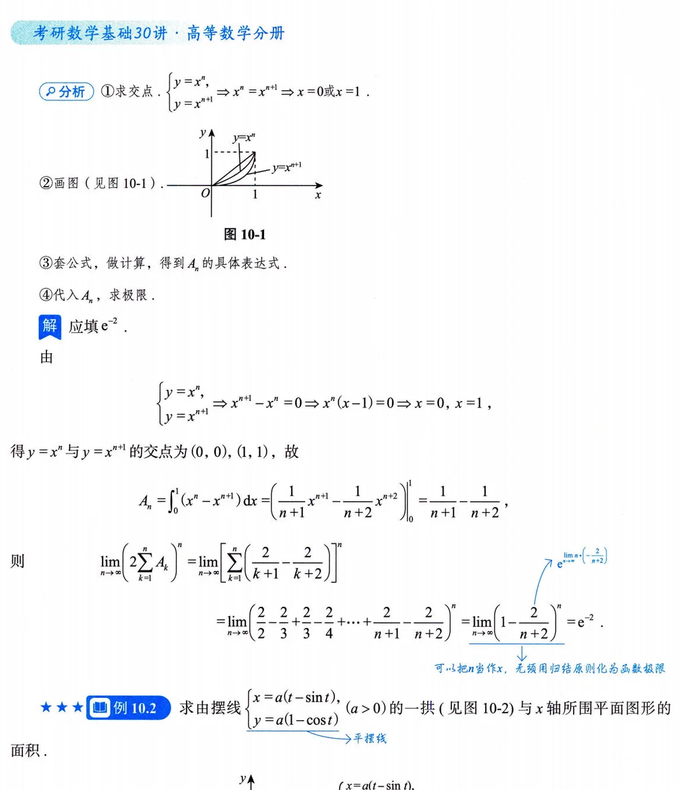
思路 题目：设 \(A_n\) 是曲线 \(y=x^n\) 与 \(y=x^{n+1}\ (n=1,2,\cdots)\) 所围区域的面积，求 \(\lim_{n\to\infty}\left(2\sum_{k=1}^{n}A_k\right)^n\)。这是"面积 + 数列极限"的综合填空。原书解答两步走：①求交点（\(x^n=x^{n+1}\Rightarrow x=0,1\)）并画图（图10-1），\(0<x<1\) 时 \(x^n>x^{n+1}\)；②把 \(A_n\) 算出来再累加。
要点
\[ A_n=\int_0^1(x^n-x^{n+1})\,\mathrm{d}x=\frac{1}{n+1}-\frac{1}{n+2}=\frac{1}{(n+1)(n+2)}, \]
\[ 2\sum_{k=1}^{n}A_k=2\sum_{k=1}^{n}\left(\frac{1}{k+1}-\frac{1}{k+2}\right)=2\left(\frac12-\frac{1}{n+2}\right)=1-\frac{2}{n+2}, \]
于是
\[ \lim_{n\to\infty}\left(2\sum_{k=1}^{n}A_k\right)^n=\lim_{n\to\infty}\left(1-\frac{2}{n+2}\right)^n=\mathrm{e}^{-2}, \]
应填 \(\mathrm{e}^{-2}\)。
注 求和那一步是标准裂项相消；极限那步是第二重要极限的变形（\(1-\frac{2}{n+2}\) 的 \(n\) 次幂）。这题提醒我们：本讲的"面积"只是壳，里面可以装数列极限的芯（印P312）。
例10.2（摆线一拱的面积）★★
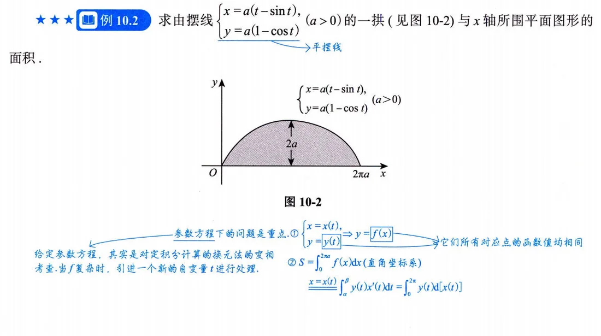
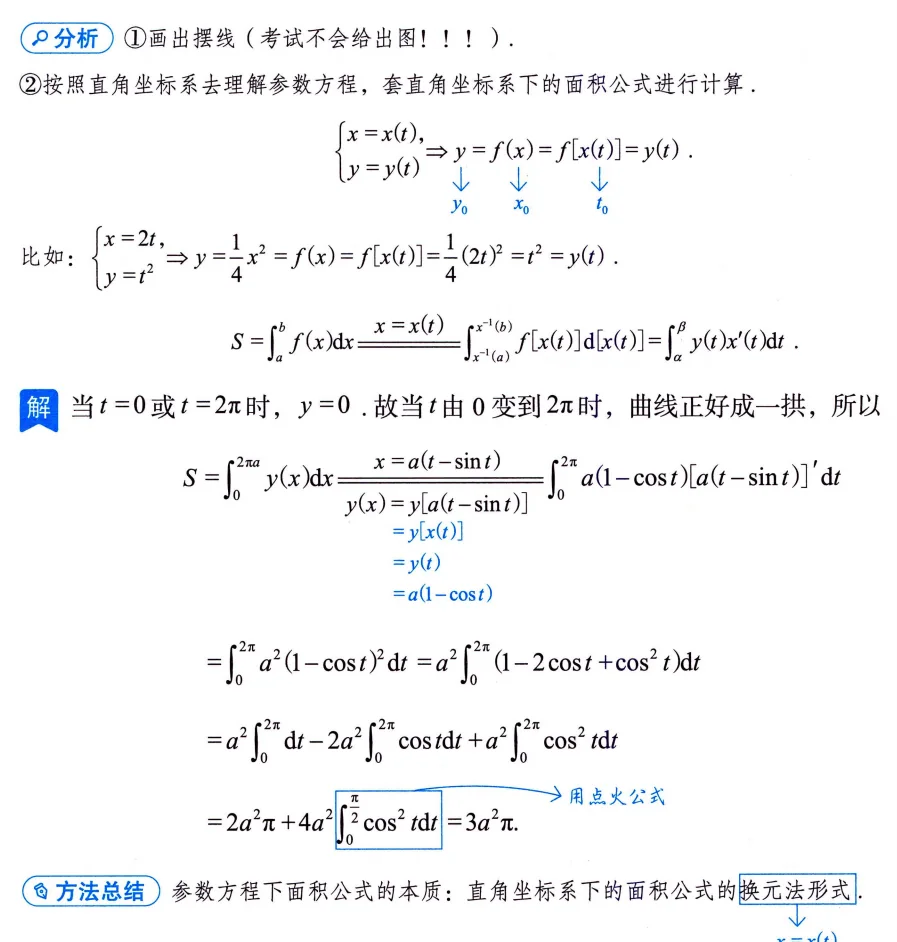
思路 考试不会给出摆线的图（原书原话），要自己画：一拱对应 \(t:0\to2\pi\)，\(t=0\) 或 \(t=2\pi\) 时 \(y=0\)，曲线正好成一拱。然后不引进新公式，把 \(S=\int_0^{2\pi a}y(x)\,\mathrm{d}x\) 作换元 \(x=a(t-\sin t)\)。
要点
\[ S=\int_0^{2\pi}a(1-\cos t)\,[a(t-\sin t)]'\,\mathrm{d}t=\int_0^{2\pi}a^2(1-\cos t)^2\,\mathrm{d}t \] \[ =a^2\int_0^{2\pi}(1-2\cos t+\cos^2t)\,\mathrm{d}t=2a^2\pi-0+4a^2\int_0^{\pi/2}\cos^2t\,\mathrm{d}t=3a^2\pi . \]
注 原书方法总结一句话：参数方程下面积公式的本质，就是直角坐标系下面积公式的换元法形式。想通这条，参数弧长、参数侧面积全是一回事。
例10.3（伯努利双纽线的面积）
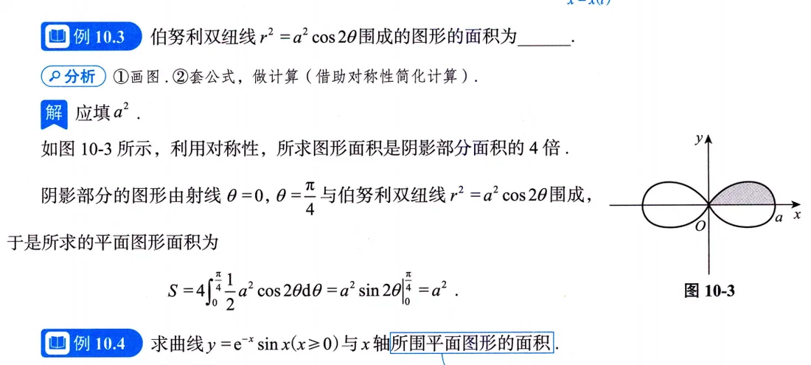
思路 双纽线 \(r^2=a^2\cos2\theta\)，画图后用对称性：总面积是第一象限那一瓣（射线 \(\theta=0\) 与 \(\theta=\frac{\pi}{4}\) 之间）的 4 倍。
要点
\[ S=4\int_0^{\pi/4}\frac12a^2\cos2\theta\,\mathrm{d}\theta=a^2\sin2\theta\Big|_0^{\pi/4}=a^2 . \]
注 极坐标题先由 \(r^2\ge0\) 定 \(\theta\) 的范围（\(\cos2\theta\ge0\)），这就是积分限只到 \(\pi/4\) 的原因。双纽线、心形线的对称轴条数要在画图时就数清楚，翻倍才不会翻错。
例10.4（无穷区间上的面积：\(\mathrm{e}^{-x}|\sin x|\) 型）
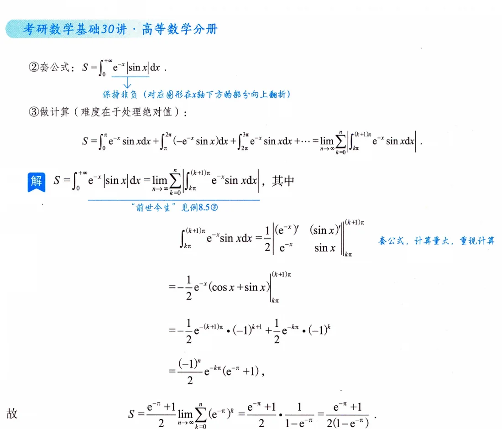
思路 题目：曲线 \(y=\mathrm{e}^{-x}\sin x\ (x\ge0)\) 与 x 轴围成的图形向右无限延伸，且在 x 轴上下方反复穿换。三步：①画图看清"上穿下穿"；②套公式 \(S=\int_0^{+\infty}\mathrm{e}^{-x}|\sin x|\,\mathrm{d}x\)，绝对值对应"图形在 x 轴下方的部分向上翻折"（原书批注）；③做计算——难度全在处理绝对值：按 \([k\pi,(k+1)\pi]\) 分段，段内 \(\sin x\) 定号。
要点 每段平移后是同一个积分的等比缩放：
\[ \int_{k\pi}^{(k+1)\pi}\mathrm{e}^{-x}|\sin x|\,\mathrm{d}x=\mathrm{e}^{-k\pi}\int_0^{\pi}\mathrm{e}^{-u}\sin u\,\mathrm{d}u=\mathrm{e}^{-k\pi}\cdot\frac{1+\mathrm{e}^{-\pi}}{2}, \]
于是公比为 \(\mathrm{e}^{-\pi}\) 的等比数列求和：
\[ S=\frac{1+\mathrm{e}^{-\pi}}{2}\sum_{k=0}^{\infty}\mathrm{e}^{-k\pi} =\frac{1+\mathrm{e}^{-\pi}}{2}\cdot\frac{1}{1-\mathrm{e}^{-\pi}} =\frac{\mathrm{e}^{-\pi}+1}{2(1-\mathrm{e}^{-\pi})}. \]
注 \(\int\mathrm{e}^{-x}\sin x\,\mathrm{d}x=-\frac12(\cos x+\sin x)\,\mathrm{e}^{-x}+C\) 这个原函数在例10.4、例10.5 连用两次（原书注框，印P315），必须一次推熟、终身白拿。
例10.5（先定定义域，再算旋转体体积）
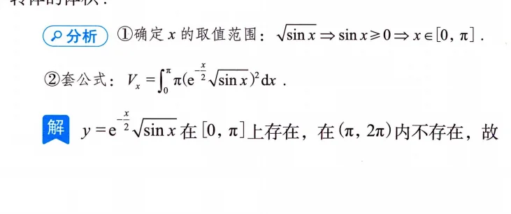
思路 曲线 \(y=\mathrm{e}^{-x/2}\sqrt{\sin x}\) 在 \([0,2\pi]\) 上并非处处存在：\(\sqrt{\sin x}\) 要求 \(\sin x\ge0\)，故只有 \(x\in[0,\pi]\)，在 \((\pi,2\pi)\) 内 \(y\) 不存在。
要点 套圆盘法：
\[ V_x=\int_0^{\pi}\pi\left(\mathrm{e}^{-x/2}\sqrt{\sin x}\right)^2\mathrm{d}x=\pi\int_0^{\pi}\mathrm{e}^{-x}\sin x\,\mathrm{d}x=\frac{\pi}{2}\left(1+\mathrm{e}^{-\pi}\right), \]
最后一步用 \(\int\mathrm{e}^{-x}\sin x\,\mathrm{d}x=-\frac12(\cos x+\sin x)\,\mathrm{e}^{-x}+C\)（原书注框，印P315）。
注 这题的坑不在公式，在看到 \([0,2\pi]\) 就真从 0 积到 \(2\pi\)。
例10.6（求 \(f(x)\) + 反函数转柱壳）
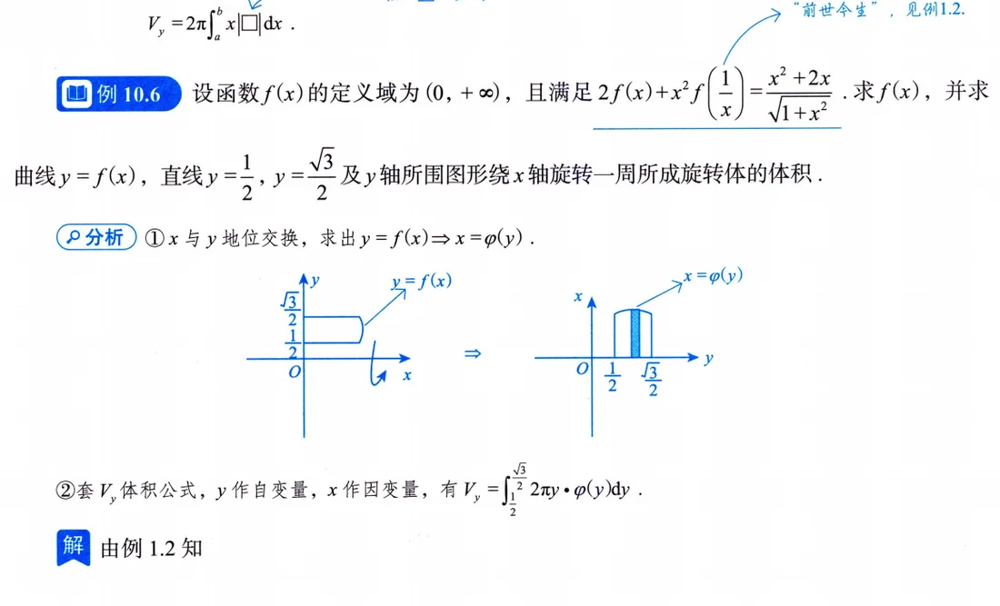
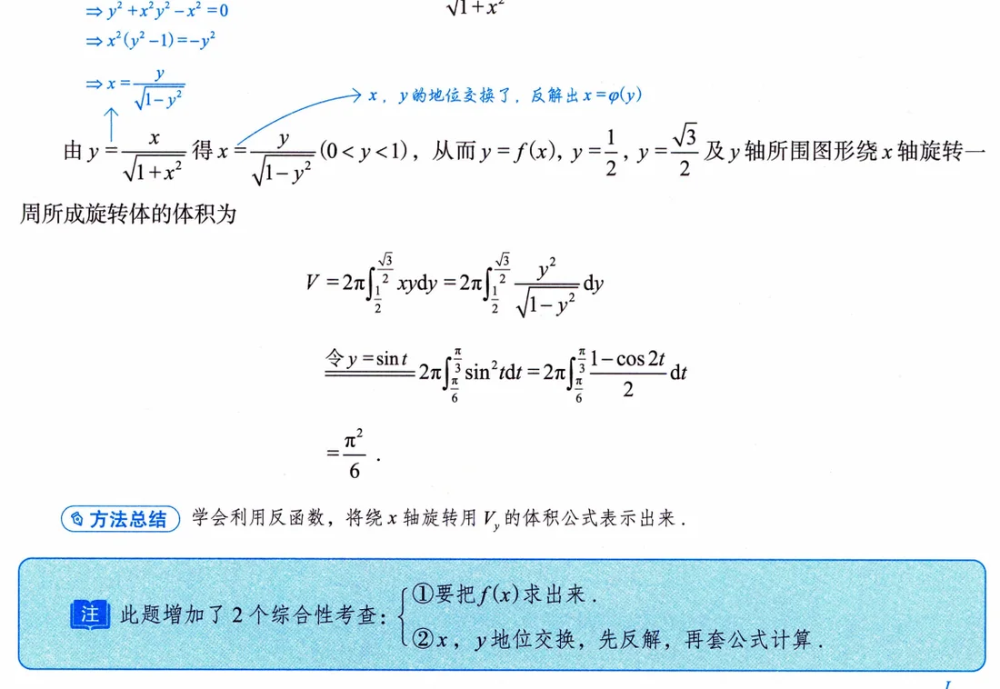
思路 原书直接引用例1.2 的结果 \(f(x)=\dfrac{x}{\sqrt{1+x^2}}\ (x>0)\)。要算的区域由 \(y=f(x)\)、\(y=\frac12\)、\(y=\frac{\sqrt3}{2}\) 及 y 轴围成——水平条区域，绕 x 轴转。原书的处理：\(x,y\) 地位交换，反解出 \(x=\dfrac{y}{\sqrt{1-y^2}}\ (0<y<1)\)，对 y 用"柱壳"式微元。
要点
\[ V=2\pi\int_{1/2}^{\sqrt3/2}xy\,\mathrm{d}y=2\pi\int_{1/2}^{\sqrt3/2}\frac{y^2}{\sqrt{1-y^2}}\,\mathrm{d}y \xlongequal{y=\sin t}2\pi\int_{\pi/6}^{\pi/3}\sin^2t\,\mathrm{d}t=2\pi\int_{\pi/6}^{\pi/3}\frac{1-\cos2t}{2}\,\mathrm{d}t=\frac{\pi^2}{6}. \]
注 原书方法总结：学会利用反函数，将绕 x 轴旋转用 \(V_y\) 的体积公式表示出来。注框还点明两个综合考查点：把 \(f(x)\) 求出来；\(x,y\) 地位交换、先反解再套公式。
例10.7（切线围成的图形：面积 + 绕 \(x=1\) 旋转）
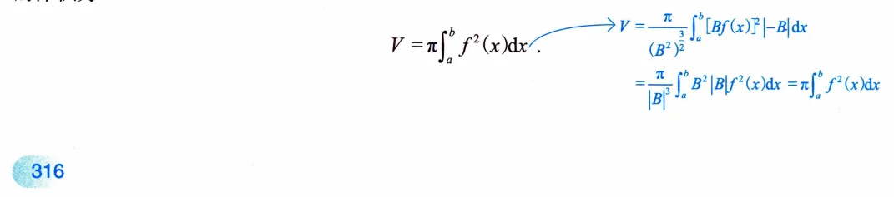
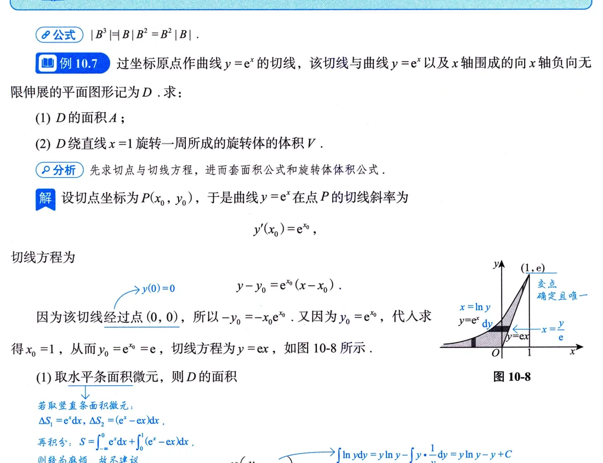
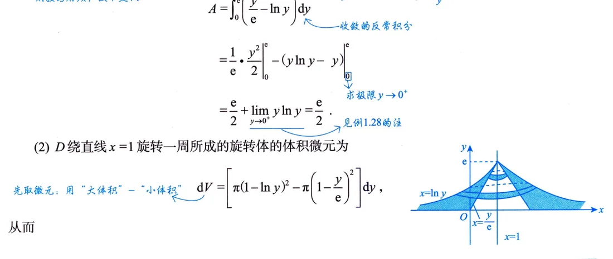
思路 题目：过坐标原点作曲线 \(y=\mathrm{e}^x\) 的切线，该切线与曲线及 x 轴围成向 x 轴负向无限伸展的平面图形 \(D\)，求 (1) \(D\) 的面积 \(A\)；(2) \(D\) 绕直线 \(x=1\) 旋转一周所得旋转体的体积 \(V\)。设切点 \(P(x_0,y_0)\)，斜率 \(y'(x_0)=\mathrm{e}^{x_0}\)，切线过原点定出 \(x_0=1\)、\(y_0=\mathrm{e}\)，切线 \(y=\mathrm{e}x\)。区域 \(D\) 向 x 轴负向无限伸展，取水平条面积微元（原书注明：取竖直条再积分会很麻烦，不建议）。
要点 (1) 右边界是曲线 \(x=\ln y\)、左边界是切线 \(x=\frac{y}{\mathrm{e}}\)：
\[ A=\int_0^{\mathrm{e}}\left(\frac{y}{\mathrm{e}}-\ln y\right)\mathrm{d}y =\left[\frac{y^2}{2\mathrm{e}}-y\ln y+y\right]_0^{\mathrm{e}}=\frac{\mathrm{e}}{2}, \]
下限 0 是收敛的反常积分，靠 \(\lim_{y\to0^+}y\ln y=0\) 兜底。(2) 绕 \(x=1\) 转，水平条扫出垫圈，"大体积"减"小体积"：
\[ \mathrm{d}V=\left[\pi(1-\ln y)^2-\pi\left(1-\frac{y}{\mathrm{e}}\right)^2\right]\mathrm{d}y, \qquad V=\pi\int_0^{\mathrm{e}}\left(\ln^2y-2\ln y+\frac{2y}{\mathrm{e}}-\frac{y^2}{\mathrm{e}^2}\right)\mathrm{d}y=\frac{5\pi\mathrm{e}}{3}. \]
注 原书注给出方法二：直接套公式 (10-1)，\(L_0:x=1\Rightarrow A=1,\ B=0,\ C=-1\)，\(V=V_{\text{大}}-V_{\text{小}}\)，结果相同。绝对值恒等式 \(|B^3|=|B|B^2=B^2|B|\)（印P317–318）要顺手。这题是"切线 + 反常积分 + 平移轴"三合一的样板。
例10.8（平均值 + 变限积分联想）
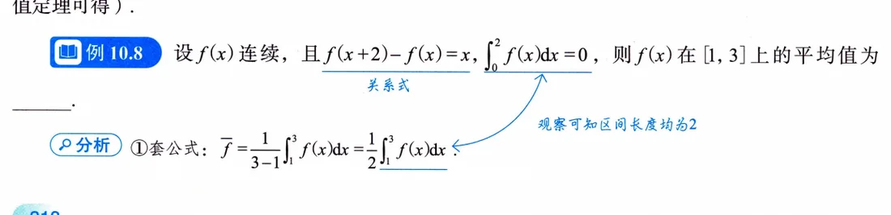
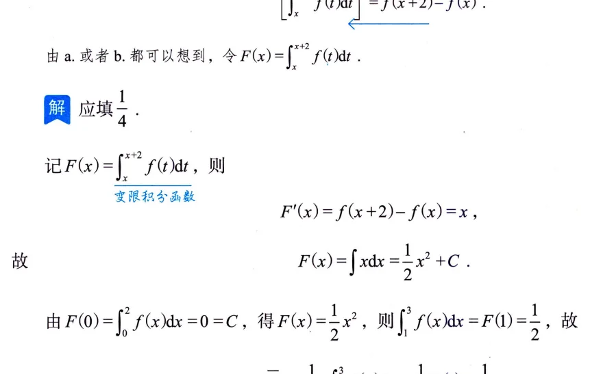
思路 题目：设 \(f(x)\) 连续，\(f(x+2)-f(x)=x\)，\(\int_0^2f(x)\,\mathrm{d}x=0\)，求 \(f\) 在 \([1,3]\) 上的平均值（填空）。平均值 \(=\frac{1}{2}\int_1^3f\,\mathrm{d}x\)，而看到 \(f(x+2)-f(x)\) 要反写成熟悉形式：\(\left[\int_x^{x+2}f(t)\,\mathrm{d}t\right]'=f(x+2)-f(x)\)。原书给了"联想周期性"和"反写经典形式"两条路，都指向同一个 \(F(x)\)；并特别提醒：本题中的 \(f(x)\) 未必具有周期性，周期公式只是联想的跳板。
要点 记 \(F(x)=\int_x^{x+2}f(t)\,\mathrm{d}t\)，则 \(F'(x)=f(x+2)-f(x)=x\)，故 \(F(x)=\frac{x^2}{2}+C\)；由 \(F(0)=\int_0^2f\,\mathrm{d}x=0\) 得 \(C=0\)。于是 \(\int_1^3f\,\mathrm{d}x=F(1)=\frac12\)，\(\bar f=\frac{1}{2}\cdot\frac12=\frac14\)，应填 \(\frac14\)。
注 区间长度都是 2 是这题的观察点；\(f(x)\) 本身未必有周期性，别把周期结论硬套上去。
例10.9（形心横坐标，仅数一数二）
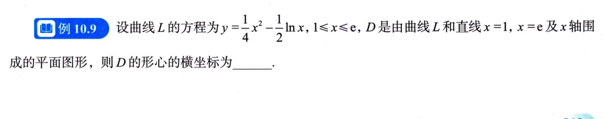
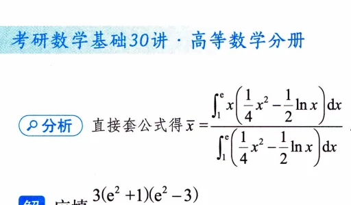
思路 题目：设 \(D\) 是由曲线 \(y=\frac14x^2-\frac12\ln x\)、直线 \(x=e\) 及 x 轴所围成的平面图形（曲线在 \(x=1\) 处取值为 \(\frac14\)，区域介于 \(x=1\) 与 \(x=e\) 之间），求 \(D\) 的形心横坐标 \(\bar x\)。直接套形心公式，分子分母都躲不开 \(\int x\ln x\) 的分部积分。
要点
\[ \bar x=\frac{\displaystyle\int_1^{\mathrm{e}}x\left(\frac14x^2-\frac12\ln x\right)\mathrm{d}x}{\displaystyle\int_1^{\mathrm{e}}\left(\frac14x^2-\frac12\ln x\right)\mathrm{d}x}, \]
分母 \(=\left[\dfrac{x^3}{12}-\dfrac12(x\ln x-x)\right]_1^{\mathrm{e}}=\dfrac{\mathrm{e}^3-7}{12}\)；分子 \(=\left[\dfrac{x^4}{16}\right]_1^{\mathrm{e}}-\dfrac12\left[\dfrac{x^2}{2}\ln x-\dfrac{x^2}{4}\right]_1^{\mathrm{e}}=\dfrac{(\mathrm{e}^2-3)(\mathrm{e}^2+1)}{16}\)。于是
\[ \bar x=\frac{3(\mathrm{e}^2+1)(\mathrm{e}^2-3)}{4(\mathrm{e}^3-7)} . \]
注 算完别急着怀疑——形心题答案从来都长这样。把 \(\int x\ln x\,\mathrm{d}x=\frac{x^2}{2}\ln x-\frac{x^2}{4}+C\) 预置进手感，考场上就是纯搬运。
例10.10（弧长：先看定义域与完全平方，仅数一数二）
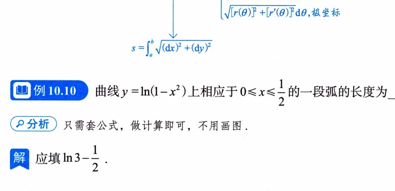
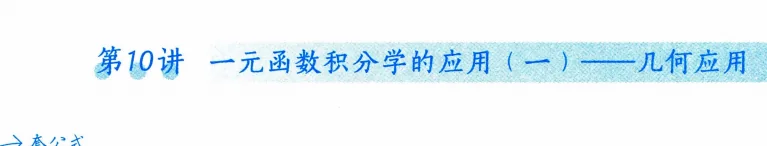
思路 题目：求曲线 \(y=\ln(1-x^2)\) 相应于 \(0\le x\le\frac12\) 的一段弧的长度。曲线只要求 \(|x|<1\)，区间 \([0,\frac12]\) 合法。求导 \(y'=\frac{-2x}{1-x^2}\)，\(1+y'^2\) 恰好配成完全平方。
要点
\[ s=\int_0^{1/2}\sqrt{1+\left(\frac{-2x}{1-x^2}\right)^2}\,\mathrm{d}x =\int_0^{1/2}\frac{1+x^2}{1-x^2}\,\mathrm{d}x =\int_0^{1/2}\left(-1+\frac{2}{1-x^2}\right)\mathrm{d}x \] \[ =\left[-x+\ln\frac{1+x}{1-x}\right]_0^{1/2}=\ln3-\frac12 . \]
注 \(\frac{2}{1-x^2}=\frac{1}{1-x}+\frac{1}{1+x}\) 的裂项是化简的关键一步。直角坐标弧长题的固定剧本：\(1+y'^2\) 配方、开方、化有理函数。
例10.11（阿基米德螺线的弧长，仅数一数二）
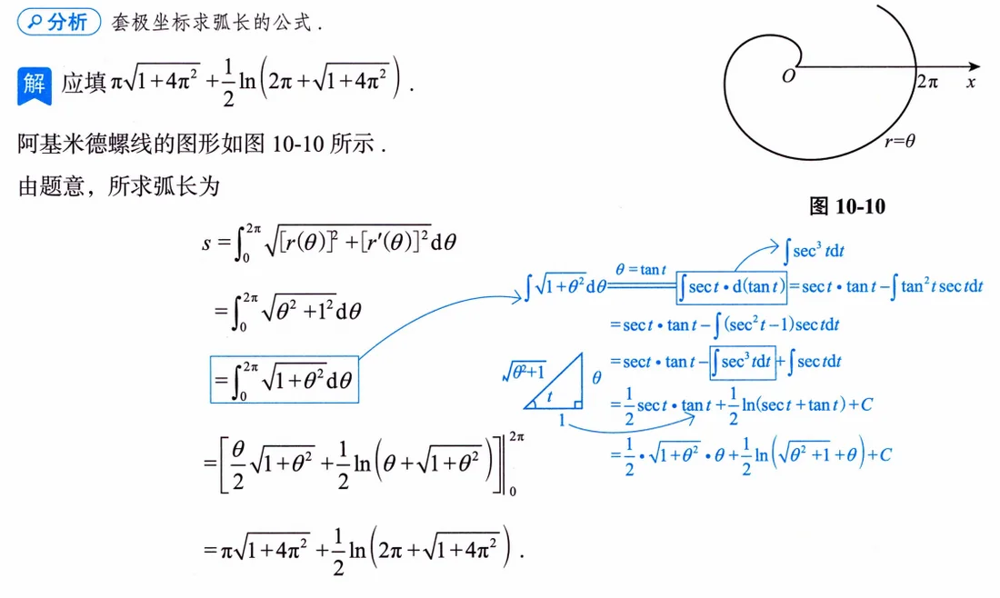
思路 极坐标弧长公式直接套：\(r=\theta\)，\(r'=1\)，\(\theta\) 从 0 到 \(2\pi\)。
要点
\[ s=\int_0^{2\pi}\sqrt{\theta^2+1}\,\mathrm{d}\theta =\left[\frac{\theta}{2}\sqrt{\theta^2+1}+\frac12\ln\left(\theta+\sqrt{\theta^2+1}\right)\right]_0^{2\pi} =\pi\sqrt{1+4\pi^2}+\frac12\ln\left(2\pi+\sqrt{1+4\pi^2}\right). \]
注 \(\int\sqrt{1+\theta^2}\,\mathrm{d}\theta\) 的结果要背熟（原书旁注用 \(\theta=\tan t\) 三角换元推了一遍）。弧长算出来多怪都是对的，别回头改——例10.12（\(y=\sqrt{x-1}\) 的侧面积 \(\frac{\pi}{6}(5\sqrt5-1)\)，印P321–322）也是这个提醒。
例10.12（旋转体的表面积，仅数一数二）
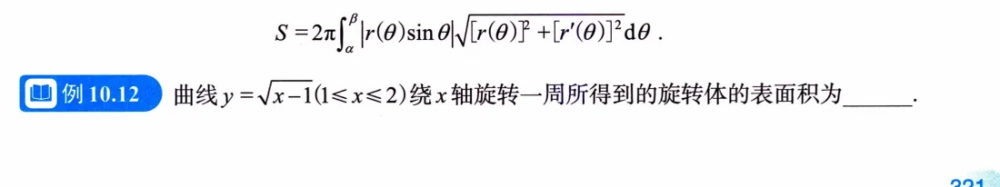
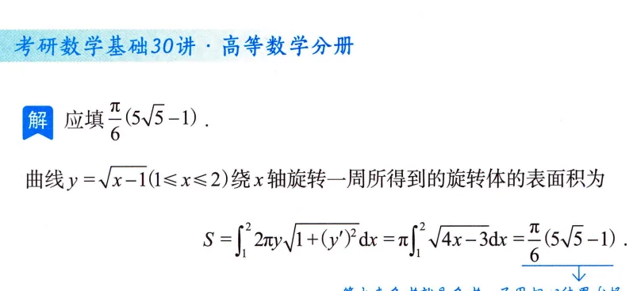
思路 题目（填空）：曲线 \(y=\sqrt{x-1}\ (1\le x\le2)\) 绕 x 轴旋转一周所得旋转体的表面积。套直角坐标侧面积公式，注意 \(y'=\frac{1}{2\sqrt{x-1}}\) 在端点 \(x=1\) 处无界但积分收敛，被积函数能整体化简。
要点
\[ S=\int_1^22\pi y\sqrt{1+(y')^2}\,\mathrm{d}x =\int_1^22\pi\sqrt{x-1}\cdot\frac{\sqrt{4x-3}}{2\sqrt{x-1}}\,\mathrm{d}x =\pi\int_1^2\sqrt{4x-3}\,\mathrm{d}x \] \[ =\pi\cdot\frac{1}{4}\cdot\frac{(4x-3)^{3/2}}{3/2}\Big|_1^2=\frac{\pi}{6}\left(5\sqrt5-1\right). \]
注 中间那步 \(\sqrt{x-1}\) 约掉是本题最舒服的一瞬间——先化简再积分，别一上来就硬扛。
例10.13（星形线的侧面积，仅数一数二）
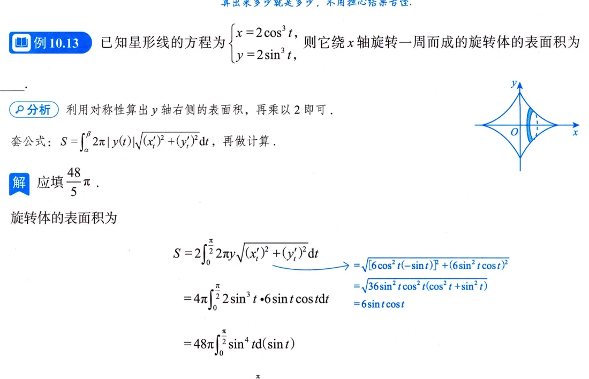
思路 星形线 \(x=2\cos^3t,\ y=2\sin^3t\) 关于 y 轴对称，算 y 轴右侧（\(t:0\to\frac{\pi}{2}\)）再乘 2。\(x_t'=-6\cos^2t\sin t\)，\(y_t'=6\sin^2t\cos t\)，第一象限内 \(\sqrt{(x_t')^2+(y_t')^2}=6\sin t\cos t\)。
要点
\[ S=2\int_0^{\pi/2}2\pi y\sqrt{(x_t')^2+(y_t')^2}\,\mathrm{d}t =4\pi\int_0^{\pi/2}2\sin^3t\cdot6\sin t\cos t\,\mathrm{d}t =48\pi\int_0^{\pi/2}\sin^4t\,\mathrm{d}(\sin t)=\frac{48\pi}{5}. \]
注 参数侧面积公式要求 \(x'(t)\neq0\)；同型弧长题见习题10.4（\(x=\cos^3t,\ y=\sin^3t\) 全长 \(=6\)，印P326）。星形线是"数一数二几何应用"的御用曲线，\(\cos^2,\sin^2\) 的开方套路值得单独练熟。
例10.14（绕 \(y=x\) 旋转：平行截面法，仅数一数二）
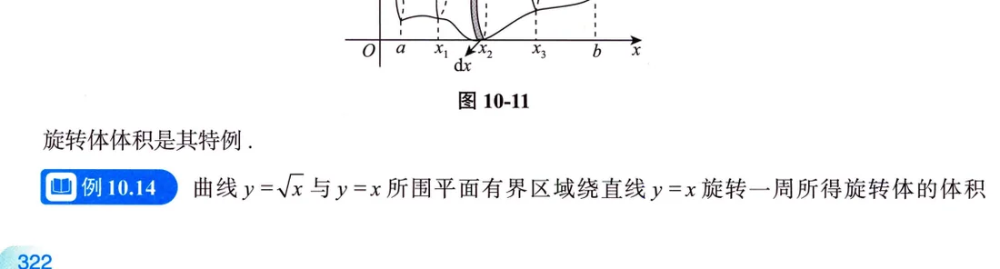
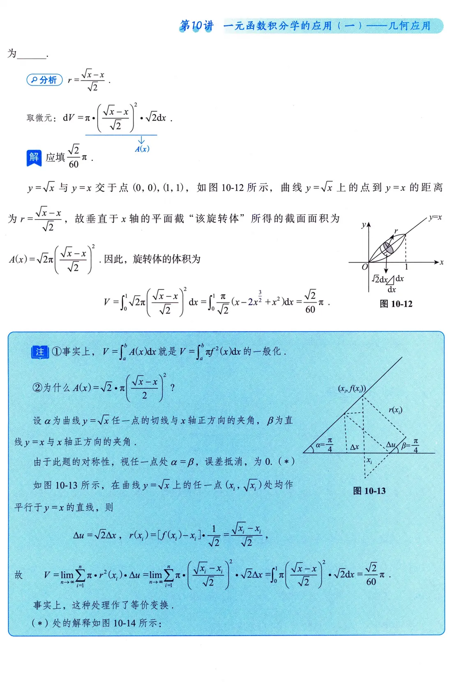
思路 题目（填空）：曲线 \(y=\sqrt x\) 与直线 \(y=x\) 围成的图形绕直线 \(y=x\) 旋转一周，求所得旋转体的体积。旋转轴是斜线，圆盘、柱壳都直接失灵，改用平行截面法：曲线上点 \((x,\sqrt x)\) 到 \(y=x\) 的距离
\[ r=\frac{\sqrt x-x}{\sqrt2}\qquad(0\le x\le1), \]
过该点垂直于 \(y=x\) 的平面截旋转体得圆盘，面积 \(A(x)=\sqrt2\,\pi\left(\frac{\sqrt x-x}{\sqrt2}\right)^2\)（截面沿轴的厚度是 \(\mathrm{d}x\) 的 \(\sqrt2\) 倍，这个 \(\sqrt2\) 就是系数的来源）。
要点
\[ V=\int_0^1\sqrt2\,\pi\left(\frac{\sqrt x-x}{\sqrt2}\right)^2\mathrm{d}x =\frac{\pi}{\sqrt2}\int_0^1\left(x-2x^{3/2}+x^2\right)\mathrm{d}x =\frac{\pi}{\sqrt2}\left(\frac12-\frac45+\frac13\right) =\frac{\sqrt2}{60}\pi, \]
应填 \(\dfrac{\sqrt2}{60}\pi\)。
注 原书配了图10-14 用弦切角 \(\alpha,\beta\) 的三种情形（\(\alpha>\beta\) 多算 \(\Delta l\)、\(\alpha<\beta\) 少算、\(\alpha=\beta\) 抵消）解释微元法的补偿直觉，并注明这方法"要有足够的经验……供参考"——基础阶段见过、理解每步来历即可，别急着量产。
易错点与技巧
- 面积、体积公式里的绝对值不是装饰：\(S=\int_a^b|y_1-y_2|\,\mathrm{d}x\)、\(V_y=2\pi\int_a^b x|y|\,\mathrm{d}x\)。原书在例10.4 旁专门标注"保持非负（对应图形在 x 轴下方的部分向上翻折）"（印P314）。
- 参数方程求面积/体积不引入新公式，全是换元：积分限从 x 的范围换成 t 的范围（例10.2 从 \(0\to2\pi a\) 换成 \(0\to2\pi\)，印P313）。
- 遇 \(\sqrt{\sin x}\)、\(\ln(1-x^2)\) 这类，先定定义域再定积分限：例10.5 只积 \([0,\pi]\)（印P314–315），例10.10 的曲线只要求 \(|x|<1\)（印P320）。
- 无穷段面积（\(\int_0^{+\infty}\mathrm{e}^{-x}|\sin x|\,\mathrm{d}x\) 型）按 \(k\pi\) 分段、段内取绝对值，公比为 \(\mathrm{e}^{-\pi}\) 的等比数列求和，最后 \(S=\frac{\mathrm{e}^{-\pi}+1}{2(1-\mathrm{e}^{-\pi})}\)（印P314）；例10.1 的面积累加则是裂项相消 + \(\lim_{n\to\infty}\left(1-\frac{2}{n+2}\right)^n=\mathrm{e}^{-2}\)（印P312）。
- 条件差异要记牢：柱壳法 \(V_y=2\pi\int_a^bx|y(x)|\,\mathrm{d}x\) 要求 \(0\le a<b\)（壳半径非负），圆盘法无此限制（印P315）；公式 (10-1) 则要求"过 \(L_0\) 的任一条垂线与曲线至多一个交点"（印P316）。
- \(V_x\) 是 \(\pi\square^2\)，\(V_y\) 是 \(2\pi\int x|\square|\,\mathrm{d}x\)——张宇的"往方框里代"记忆法（印P315）。绕 \(x=1\)、绕 \(y=3\) 这类平移轴，一律"大体积减小体积"（例10.7、习题10.9 的 \(V=2(V_1+V_2)=\frac{448}{15}\pi\)，印P317–318、P328）。
- 弧长三公式与侧面积三公式成对记：侧面积 = 对应弧长微元 \(\times\,2\pi|y|\)；体积用 \(\mathrm{d}x\)，侧面积用 \(\mathrm{d}s\)（印P321 手写注）。极坐标侧面积的旋转半径是 \(|r\sin\theta|\)，绝对值别丢（印P321）。
- 平均值题的第二层几乎都在变限积分：看到 \(f(x+2)-f(x)\) 就写 \(F(x)=\int_x^{x+2}f(t)\,\mathrm{d}t\) 再求导（例10.8，印P318–319）。
- 形心公式 \(\bar y\) 的分子带 \(\frac12\)（\(\frac12\int f^2\,\mathrm{d}x\)），\(\bar x\) 的不带——两个分子别串（印P319，例10.9）。
- 极坐标面积先由 \(r^2\ge0\) 定 \(\theta\) 范围再谈对称翻倍：双纽线只到 \(\pi/4\)（例10.3，印P313）；直角坐标弧长先看 \(1+y'^2\) 能否配方（例10.10，印P320–321）。
- 填空题答案长得怪是常态：例10.11 的 \(\pi\sqrt{1+4\pi^2}+\frac12\ln(2\pi+\sqrt{1+4\pi^2})\)、例10.12 的 \(\frac{\pi}{6}(5\sqrt5-1)\)、例10.9 的 \(\frac{3(\mathrm{e}^2+1)(\mathrm{e}^2-3)}{4(\mathrm{e}^3-7)}\)——过程对就别回头改。
- 绕 \(y=x\) 旋转（例10.14）：改用平行截面法，曲线上点到 \(y=x\) 的距离 \(r=\frac{\sqrt x-x}{\sqrt2}\)，\(A(x)=\sqrt2\,\pi\left(\frac{\sqrt x-x}{\sqrt2}\right)^2\)，\(V=\frac{\sqrt2}{60}\pi\)（印P322–323）。原书自己都说这方法要直觉、供参考，基础阶段见过即可。
- 两条常用原函数要一次背死：\(\int\mathrm{e}^{-x}\sin x\,\mathrm{d}x=-\frac12(\cos x+\sin x)\mathrm{e}^{-x}+C\)（例10.4、例10.5 连用）；\(\int\sqrt{1+\theta^2}\,\mathrm{d}\theta=\frac{\theta}{2}\sqrt{\theta^2+1}+\frac12\ln(\theta+\sqrt{\theta^2+1})+C\)（例10.11）。
考点与方法补充（站注）
- 站注·真题大数据（新东方近15年逐题统计口径）：本讲在"积分几何应用"名下属于第一梯队——旋转体体积是"每年常客"，弧长与侧面积为数学一专属的稳定考点（数二亦考弧长与形心，原书标注为"仅数一、数二"；数三主线是面积、体积、平均值）。备考权重上，旋转体体积（含平移轴、柱壳与圆盘的选择）值得花最多时间，其次是面积的综合题（结合切线、数列极限、反常积分），弧长/侧面积/形心是数一数二的"背公式送分块"。
- 站注·张宇方法论印证：本讲开篇"套公式，做计算"六个字正是强化36讲第1讲"判定类型，做好计算"思想在几何应用上的落点——先判图形类型和旋转轴，再选微元。张宇反复强调"尽快结束纯听课阶段，自己动手最重要"：这一讲公式不难记，但例10.4、例10.7、习题10.9 的计算量只有亲手算过才知道坑在哪（绝对值、分部积分、对称性），看懂解答和独立做对之间隔着整整一个分数段。
- 站注·与前后的衔接：本讲的弹药库是第9讲的积分计算（换元、分部、区间再现在这里全是工具）；微元法思想直接通向第12讲的物理应用（功、压力、质心，同一套"取微元—积分"）和数一的二重积分（L14，平面薄片的形心公式把本讲 \(\int xf\) 升级成二重积分 \(\iint x\,\mathrm{d}\sigma\)）；积分等式与不等式（L11）里的变限积分构造，和例10.8 的 \(F(x)=\int_x^{x+2}f\) 是同一门手艺。
- 站注·真题使用建议：本讲考点在近十年真题里反复出现（旋转体体积几乎年年有面孔），复习检验可用通用标准——随机抽 5 道几何应用大题独立完成，正确率不到九成就回来重推微元法。2010 年以前的题风格差异大，参考价值有限。
- 站注·试卷结构：数二高数占 78%，几何应用（含弧长）在数二卷面上权重最高；数一数三高数占 56%，本讲通常以一道大题的一部分或填空出现。
- 站注·原书印证：本讲例题密度高、注框密集（"注"里全是方法总结），张宇的写法本身就是"少讲理论、多走计算"——这与站注里的考频数据互为印证：这一讲丢分几乎从不丢在"不知道公式"，而是丢在计算与定限。
知识清单自测
自测题
1 求 \(y=x^2\) 与 \(y=2x\) 所围平面图形的面积。
查看答案
解 交点：\(x^2=2x\Rightarrow x=0,2\)，\([0,2]\) 上直线在上方：
\[ A=\int_0^2(2x-x^2)\,\mathrm{d}x=\left[x^2-\frac{x^3}{3}\right]_0^2=\frac43 . \]
2 位于曲线 \(y=\dfrac{1}{\sqrt{1+x^2}}\ (0\le x<+\infty)\) 下方、x 轴上方的无界区域绕 x 轴旋转一周，求所得旋转体的体积。（习题10.1）
查看答案
解 圆盘法 + 反常积分：
\[ V=\int_0^{+\infty}\pi\left(\frac{1}{\sqrt{1+x^2}}\right)^2\mathrm{d}x=\pi\lim_{b\to+\infty}\int_0^b\frac{\mathrm{d}x}{1+x^2}=\pi\lim_{b\to+\infty}\arctan x\Big|_0^b=\frac{\pi^2}{2}. \]
3 求星形线 \(x=\cos^3t,\ y=\sin^3t\ (0\le t\le2\pi)\) 的全长。（习题10.4）
查看答案
解 由对称性，算第一象限弧段乘 4：
\[ s=4\int_0^{\pi/2}\sqrt{(-3\cos^2t\sin t)^2+(3\sin^2t\cos t)^2}\,\mathrm{d}t =4\int_0^{\pi/2}3|\sin t\cos t|\,\mathrm{d}t =12\int_0^{\pi/2}\sin t\cos t\,\mathrm{d}t=6 . \]
4 设 \(f(x)\) 连续，\(f(x+1)-f(x)=2x\)，\(\int_0^1f(x)\,\mathrm{d}x=1\)，求 \(f(x)\) 在 \([1,2]\) 上的平均值。（例10.8 同型改编）
查看答案
解 记 \(F(x)=\int_x^{x+1}f(t)\,\mathrm{d}t\)，则 \(F'(x)=f(x+1)-f(x)=2x\)，故 \(F(x)=x^2+C\)。由 \(F(0)=\int_0^1f\,\mathrm{d}x=1\) 得 \(C=1\)。而 \(\int_1^2f(x)\,\mathrm{d}x=F(1)=2\)，区间长度为 1，故 \(\bar f=2\)。
5 求 \(y=\sqrt x\) 与 \(y=x\) 所围平面图形绕 x 轴旋转一周所得旋转体的体积。
查看答案
解 交于 \((0,0),(1,1)\)，\([0,1]\) 上 \(\sqrt x\ge x\)，垫圈"大平方减小平方"：
\[ V=\pi\int_0^1\left[(\sqrt x)^2-x^2\right]\mathrm{d}x=\pi\int_0^1(x-x^2)\,\mathrm{d}x=\pi\left(\frac12-\frac13\right)=\frac{\pi}{6}. \]
6 求曲线 \(y=3-\left|x^2-1\right|\) 与 x 轴所围成的图形绕直线 \(y=3\) 旋转一周所得旋转体的体积。（习题10.9 同型）
查看答案
解 曲线为偶函数：\([0,1]\) 上 \(y=2+x^2\)，\([1,2]\) 上 \(y=4-x^2\)（顶点 \(B(1,3)\)，右端 \(C(2,0)\)）。绕 \(y=3\) 用垫圈，外半径 \(R=3\)（轴到 x 轴），内半径 \(r=3-y(x)\)：
\[ \mathrm{d}V=\pi\left[9-(3-y)^2\right]\mathrm{d}x=\pi\left(6y-y^2\right)\mathrm{d}x . \]
两段代入 \(y\) 都得 \(6y-y^2=8+2x^2-x^4\)。由对称性，
\[ V=2\pi\int_0^2\left(8+2x^2-x^4\right)\mathrm{d}x =2\pi\left[8x+\frac{2x^3}{3}-\frac{x^5}{5}\right]_0^2 =2\pi\cdot\frac{224}{15}=\frac{448}{15}\pi . \]